こいつ自分で攻略サイトを作成する気か！？正気じゃねえ…！
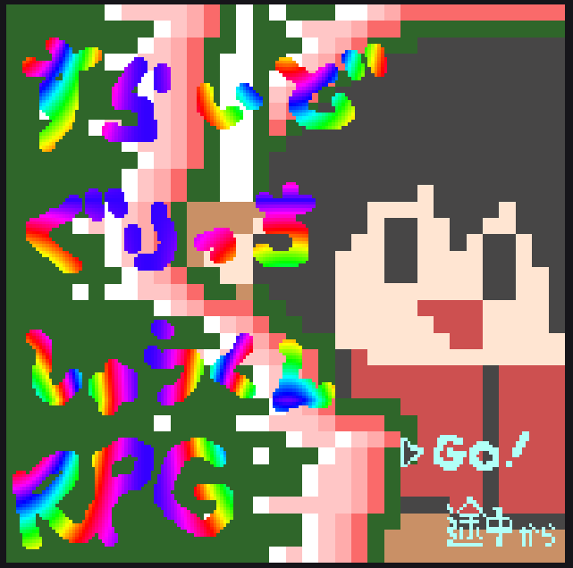敵： 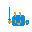 ざこざこさん HP:3 AT:1 EXP:1 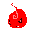 もえっち HP:2 AT:2 EXP:2
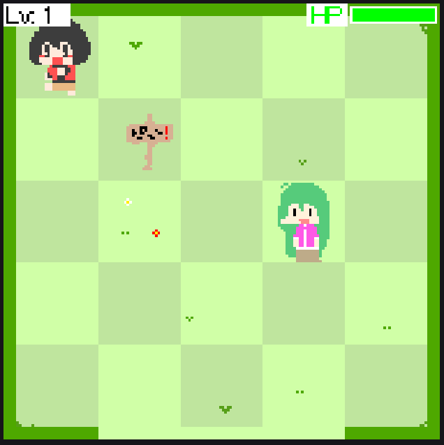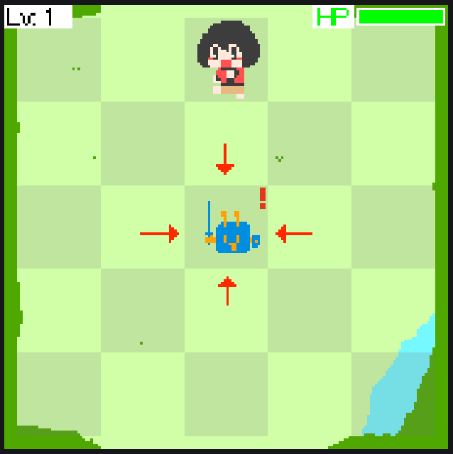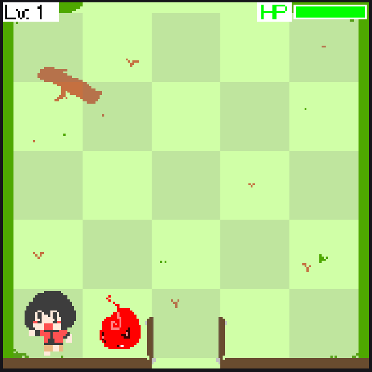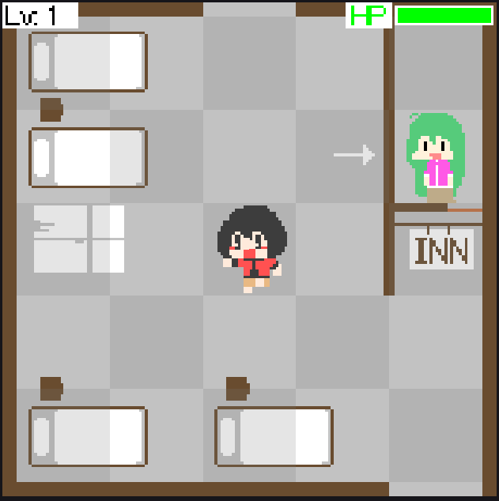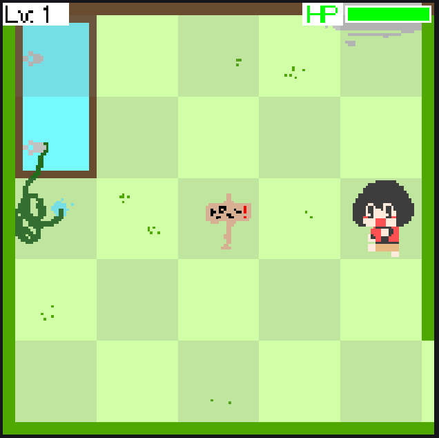
必須テクニック：同時戦闘
戦闘中に敵に触れることで戦闘相手を増やせます。攻撃は全部の敵に行います。逆に全部の敵から攻撃されます。カーソルをずらして戦闘を開始すれば、片方の敵に攻撃しつつ、もう片方の敵で回復するといったテクニカルな動きも可能です。
これを使えばレベル上げがサクサク行えますが、ここら辺の敵は経験値がショボイので３～５レベルくらいで満足して先に進んでいいです。
（EXPが10たまるとレベルが1あがり、攻撃力が1、HPが3上がる）
2回踏まないと先に進めませんが、2回踏むと死にます。
なので最初に地雷を踏んだあとに回復しましょう。戦闘画面を維持するか、エリア４の宿屋を維持しておくことで、どこでも回復が可能です。
敵： 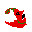 なげきハバネロ HP:5 AT:9 EXP:5 耐久キノコ HP:30 AT:1 EXP:10
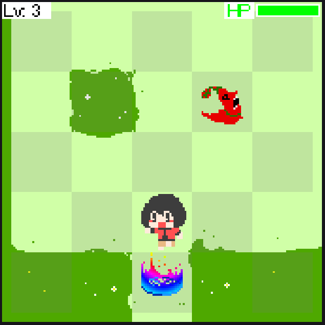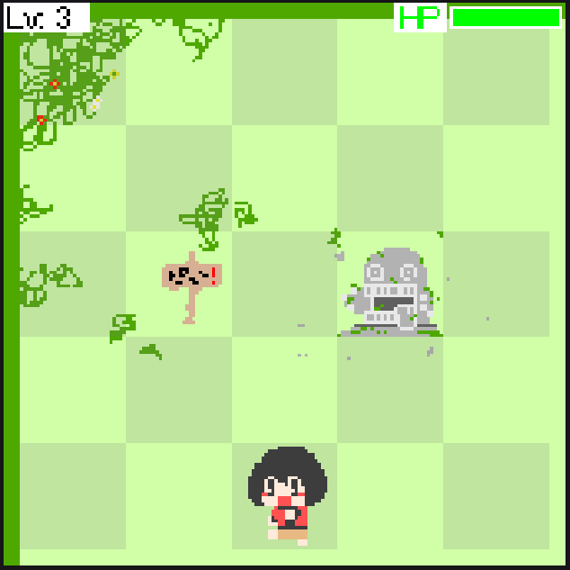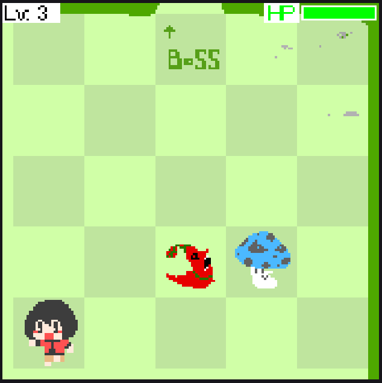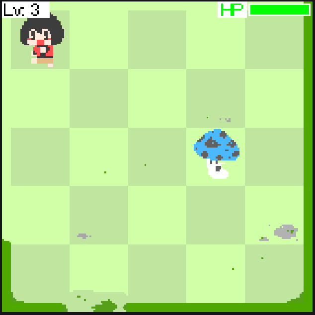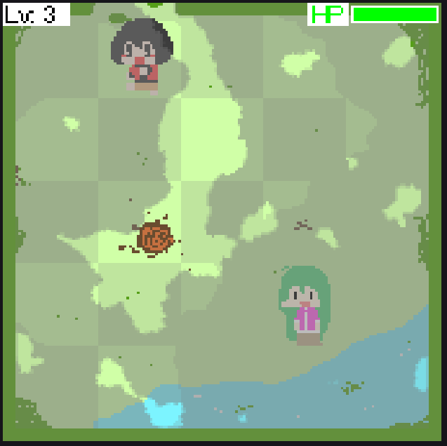
なげきハバネロは攻撃力が高いですが、セーブポイントに乗れば全回復できるため、レベル1でも倒せます。また、レベル5になればハバネロの攻撃を受けることなく倒せるため、EXPを稼ぎ放題になります。
耐久キノコは対照的にHPが高く、攻撃が低い耐久キャラクターです。
…実は耐久キノコはしゅうくんの耐久を補強することもできます。先ほど書いたカーソルずらしで耐久キノコに1/3回復を選択した状態でハバネロと戦いましょう。キノコの攻撃力が低いため、回復を選ぶ相手として適しています。（中ボス戦でも有効）
敵： 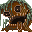 トレンデイ HP:1000 AT:1 EXP:100（エンカウントは1体のみ）
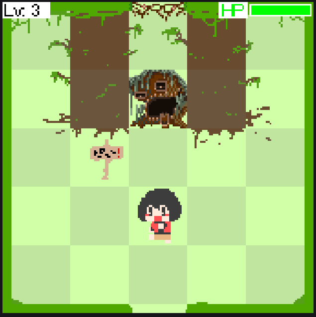攻撃力が1しかないため、レベル1でも倒せます。30レベルくらいまであげるとサクっと倒せます。エリア9の雑魚が二体ならんでいる場所でレベル上げを行うと楽です。
敵： 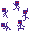 影の五人衆 HP:50 AT:5 EXP:30（5体同時エンカウント！）
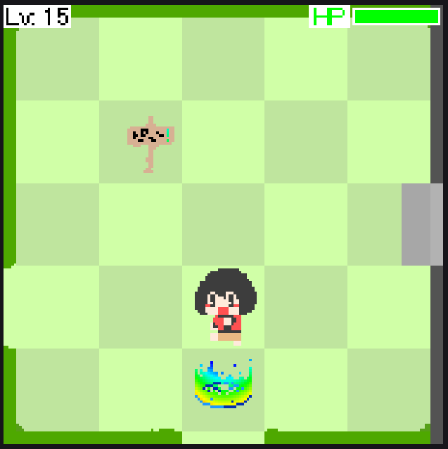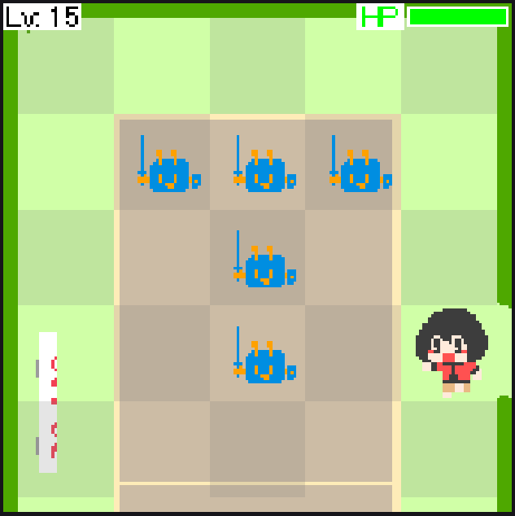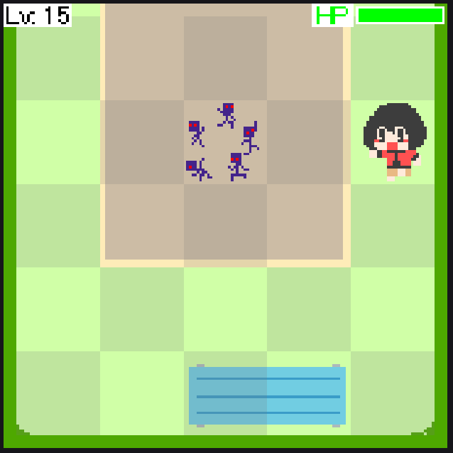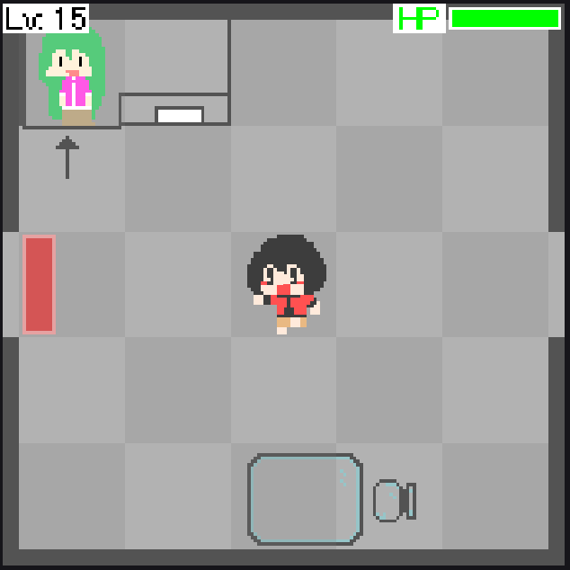
五体同時エンカウント、ということは攻撃力が5倍、EXPも5倍です。レベルが低いまま来た場合は慎重に戦う必要があります。
ざこざこさんとは戦えません。
画像の通りに進めば通れます。
画像の通りに進めば通れます。…と言っても意味不明ですね。
赤レバーウィンドウ×２青レバーウィンドウ×２を開いています。また、それぞれのウィンドウはカーソルの位置がずらしてあります。
…よくわからないですか？…タイトル画面からこの先のエリアをロードしてください！
それと、このエリアでは×ボタンで入口にもどるシステムが実装されていることを覚えておいてください。
敵：
deyuhando HP:3000 AT:10 EXP:120
deyu HP:3000+しゅうくんの攻撃力 AT:しゅうくんの攻撃力÷3 回復力:しゅうくんの攻撃力+100 EXP:999999
ラスボスは3体でできたモンスターです。
左右の手は耐久が中ボスの3倍、攻撃力も10倍とそれなりに強いです。さきほどのエリアでレベル上げを行っていないなら、めんどくさいですね（笑）
問題は中央の本体です。戦闘開始時にこちらの攻撃力をもとにステータスが決定されます。（戦闘開始後にエリア２１の看板が教えてくれます。）
また、回復行動を行う唯一の敵です。こちらの攻撃力を超えた値で回復します。そのため、レベルを999999999999にしていたとしても倒せません。
ですが、戦闘が始まって回復量が決定されてからレベルを上げれば倒せます。モンスターのいるエリアまで戻ってレベル上げを行いましょう。
戦闘に勝利するか、敗北するとこのエリアまで戻ってきますので安心して遠くまで行ってください。
 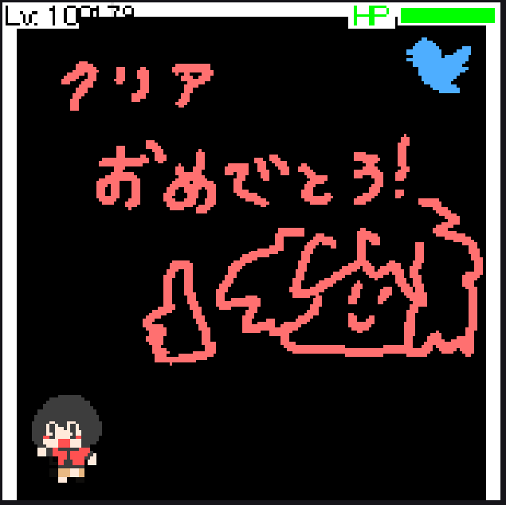
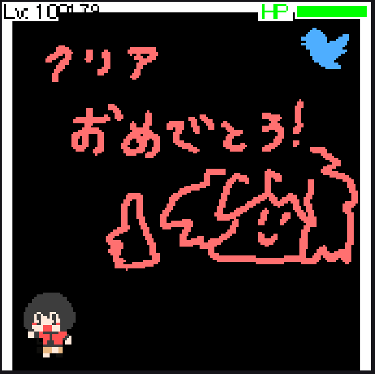
開発を支えてくれたフォロワーたちに感謝──────────────
敵： みくぽん HP:9999999 AT:9999999 EXP:9999999
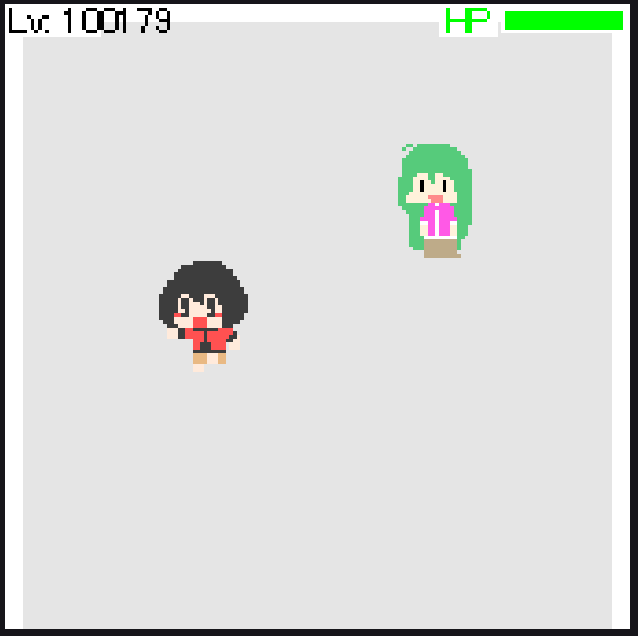倒せるらしいですよ。オススメは…しません。